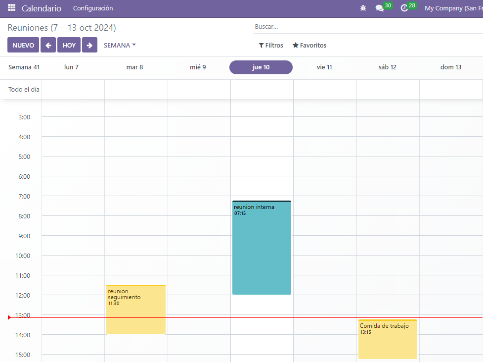
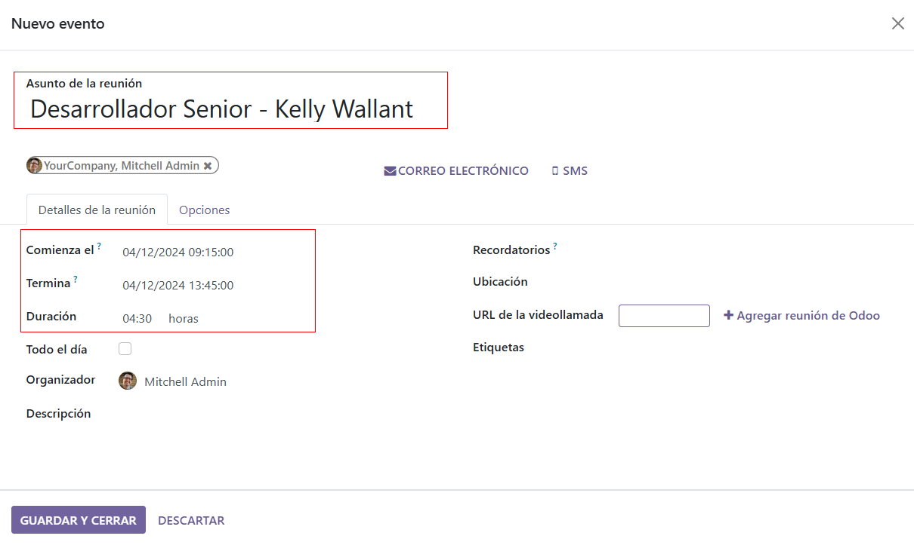
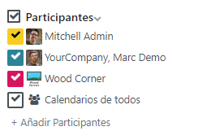

Calendario¶
Odoo Calendario es una aplicación de programación de actividades que permite a los usuarios integrar el flujo de trabajo de la empresa en una única plataforma de gestión. Al integrarse con las demás aplicaciones del ecosistema de Odoo, Calendario permite a los usuarios programar y organizar reuniones, agendar eventos, planificar evaluaciones de empleados, coordinar proyectos y mucho más, todo desde la misma plataforma.
Al abrir la , los usuarios tienen una vista general de sus reuniones actuales. La vista seleccionada aparece como un menú desplegable con las opciones Día, Semana, Mes o Año. En el menú desplegable de opciones de vista, los usuarios también pueden habilitar o deshabilitar la opción Mostrar fines de semana.
Truco
Dependiendo de la opción de vista seleccionada, los usuarios pueden hacer clic en los botones (flecha izquierda o flecha derecha) para cambiar entre días, semanas, etc., y volver al día actual con el botón Hoy.
Sincronizar calendarios de terceros¶
Los usuarios pueden sincronizar Odoo con los calendarios existentes de Outlook y/o Google, dirigiéndose a . Desde aquí, ingrese el ID de Cliente y el Secreto de Cliente. También hay una opción para pausar la sincronización marcando la casilla, o automatizar la sincronización dejándola en blanco.
Una vez que se completen las configuraciones deseadas, asegúrese de hacer clic en Guardar antes de continuar.
Los eventos creados en los calendarios sincronizados aparecen automáticamente en todas las plataformas integradas.
Crea actividades desde el Chatter¶
Cree nuevas reuniones al instante en cualquier lugar de Odoo a través del chatter de un registro individual, como en una tarjeta de oportunidad de CRM o en una tarea de la aplicación Proyectos.
Desde el chatter, haga clic en el botón Actividades. En la ventana emergente Programar actividad, seleccione el Tipo de actividad deseado, lo que mostrará un conjunto de botones, dependiendo de la actividad.
Las actividades que involucran otros horarios, como Reunión o Llamada para demostración, se vinculan con la aplicación Calendario. Seleccione una de estas actividades para vincularla con la aplicación Calendario, luego presione Abrir calendario para regresar a la aplicación. Alternativamente, también es posible seleccionar Programar y marcar como hecho para cerrar la actividad, o seleccionar Hecho y programar siguiente para mantener abierta la ventana de Programar actividad y crear otra.
Ver también
Planear un evento¶
Para añadir un evento al calendario, abra la y haga clic en la fecha deseada. En la ventana emergente Nuevo evento que aparece, comience por añadir el título del evento.
La fecha seleccionada se rellena automáticamente en el campo Inicio. Esto se puede cambiar haciendo clic en la sección de la fecha y seleccionando una nueva fecha en el calendario. Para eventos de varios días, seleccione la fecha de finalización en el segundo campo y luego haga clic en Aplicar.
Marque la casilla Todo el día si no hay una hora de inicio o finalización específica.
Para eventos con horas de inicio y finalización específicas, asegúrese de que la casilla Todo el día esté desmarcada para habilitar la selección de horas. Con la casilla Todo el día desmarcada, las opciones de hora aparecen en el campo Inicio.
El usuario que ha iniciado sesión se añade automáticamente como el primer asistente. También se pueden añadir o crear asistentes adicionales desde aquí.
Para reuniones virtuales, copie y pegue la URL en el espacio proporcionado en el campo URL de videollamada. O bien, haga clic en Reunión de Odoo para crear un enlace.
A continuación, cree el evento haciendo clic en Guardar y cerrar, o seleccione Más opciones para configurar el evento con mayor detalle.
Truco
Una vez que el evento se ha creado, los usuarios pueden hacer clic directamente en la reunión virtual desde el evento del calendario para acceder a más opciones de configuración.
El campo Descripción permite a los usuarios añadir información y detalles adicionales sobre la reunión.
Haga clic en Más opciones para navegar al formulario de la reunión, que ofrece configuraciones adicionales para el evento:
Duración: Define la duración de la reunión en horas o activa el interruptor Todo el día.
Recurrente: Marque la casilla para crear una reunión recurrente. Una vez seleccionada, esto abrirá nuevos campos:
Zona horaria: Seleccione la zona horaria para la cual se especifica la hora de esta reunión.
Repetir: Seleccione el periodo de recurrencia de esta reunión. Dependiendo del tipo de recurrencia seleccionado, aparece un campo adicional en el que los usuarios pueden indicar cuándo debe repetirse la reunión. Por ejemplo, si se selecciona Mensual como opción de Repetir, aparecerá un nuevo campo en el que el usuario decide en qué Día del mes debe repetirse la reunión.
Hasta: Seleccione el Número de repeticiones limitado para la recurrencia de esta reunión, la Fecha de finalización en la que las repeticiones deben detenerse, o si las reuniones deben repetirse Para siempre.
Etiquetas: Añada etiquetas al evento, como
Reunión con clienteoReunión interna. Estas etiquetas se pueden buscar y filtrar en la aplicación Calendario al organizar múltiples eventos.Cita: Vincule citas existentes o nuevas. Estas se pueden configurar a través del botón Compartir disponibilidades desde el panel principal de Calendario.
Privacidad: Alterna entre las opciones de visibilidad para controlar quién puede ver el evento.
Organizador: Este se establece por defecto como el usuario actual de Odoo. Seleccione uno nuevo de entre los usuarios existentes, o cree y edite un nuevo usuario.
Descripción: Añada información o detalles adicionales sobre la reunión.
Recordatorios: Seleccione las opciones de notificación para enviar a los asistentes. Elija una notificación predeterminada o configure nuevos recordatorios.
Coordinar con la disponibilidad de los equipos¶
Al programar un evento para varios usuarios, en el panel de la aplicación Calendario, marque la casilla junto a Asistentes para ver la disponibilidad de los miembros del equipo. Marque (o desmarque) la casilla junto a los usuarios listados para mostrar (u ocultar) los calendarios individuales.
